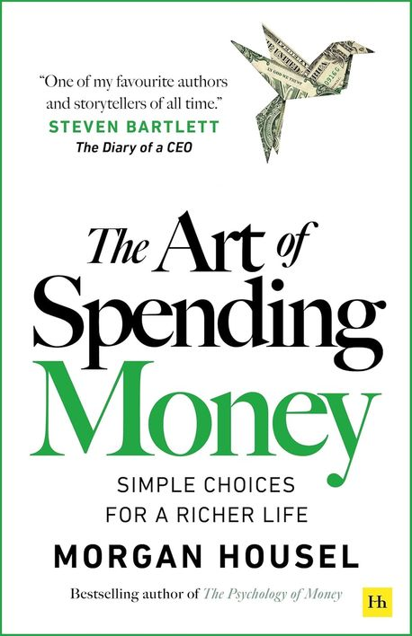

The Art of Spending Money - Morgan Housel
2026-03-28

School often teaches money as if it were a neat science of formulas and logic. This book starts by rejecting that frame. In real life, money is closer to art, because spending only becomes meaningful when you know what kind of life you want. What stayed with me was that the book is not mainly about earning more, but about building a personal standard for using money well.
The book divides spending into two broad motives. One is using money as a tool for a better life. The other is using money as a scorecard for social status. Most people say they want the first, but quietly spend years chasing the second. That sentence hit me hard, because it exposes how easy it is to confuse comfort, utility, and dignity with display.
A useful distinction follows from that. When you spend for usefulness, your money can express your own identity. But when you spend for status, your money starts imitating someone else's identity. That is why the book keeps pushing the reader back toward the question: what do I actually want my life to feel like?
One of the most humane points in the book is that everyone is shaped by a very particular past. To understand why someone spends in a certain way, you first have to understand what kind of life they have lived. The book notes that people who were treated coldly in poverty often feel stronger pleasure in visibly displaying wealth. That does not excuse everything, but it warns against lazy judgment.
The advice is simple and severe at the same time. No one can force you into one supposedly correct way of spending. There is no universal right answer. At the same time, you should not casually condemn how other people spend either. Both sides require more humility than money discussions usually allow.
The book leans on an argument close to Alain de Botton's: behind status anxiety is often a desire not just for rank, but for love and recognition. That helps explain why modern people spend so much money on impressive things. Most of that spending feeds external self-esteem. But what people really long for is deeper and more satisfying inner self-esteem.
That distinction changed the way I read ordinary ambitions. People do not actually want to boast forever about clothes or cars. In the end, they want to be proud of who they are and what they have built. The weaker one's ability to pursue inner esteem, the more tempting external esteem becomes. That diagnosis felt uncomfortable because it is probably true much more often than we admit.
The idea of psychological wealth is central here. Happiness is close to satisfaction, and satisfaction comes from the gap between what you have and what you want. Because of that, the best measure of wealth is not simply assets on paper, but what remains after subtracting desire from possessions. The book also draws a useful line between ecstatic happiness and steady satisfaction. The first fades quickly. The second sinks deeper and lasts longer.
This connects to the difference between an inner scoreboard and an outer one. If your scoreboard is outside you, comparison never ends. If it is inside, richness becomes more attainable. I also liked the practical turn that the people whose respect I truly want are usually family and close friends. They care much less about what I wear or drive than about how I treat them, what kind of feeling I leave behind, and whether I am useful to them.
One of the cleanest lessons is that you should boast less about consumption and more about what you have built. Family, friendships, memories, and accumulated wisdom are better grounds for pride than visible purchases. Money can still matter here, because sometimes it helps create memories or buy time with people you love. But in the end, the book insists that meaning comes more from people than from objects.
There was also a sharp side note I liked: if someone can buy anything at any time without ever needing to save, even pleasure itself can flatten out. The value of money is tied not only to purchase power, but also to restraint, anticipation, and the meaning created by choosing carefully.
The book argues that the best financial advice is not a shallow slogan like live for today or save for tomorrow. A better rule is to reduce what you are likely to regret in the future. That standard is more honest, because the object of regret differs from person to person and even changes inside one life over time. What matters is to keep adjusting with that reality in view.
The line I wanted to keep was that the best way to enjoy today while investing in tomorrow is to build good memories, and that independence is true wealth. The fastest way to become rich is to save slowly. That is not glamorous advice, but it feels durable. It points to freedom rather than spectacle.
The closing idea that stayed with me is that it matters more to learn what to give up than to learn what to buy. The metaphor was excellent: people fail at climbing not because the mountain is too high, but because of blisters on their feet. Large ideals often collapse through small frictions. Spending habits are similar. Tiny leaks, repeated comparison, and unmanaged desire can damage a life more than one dramatic mistake.